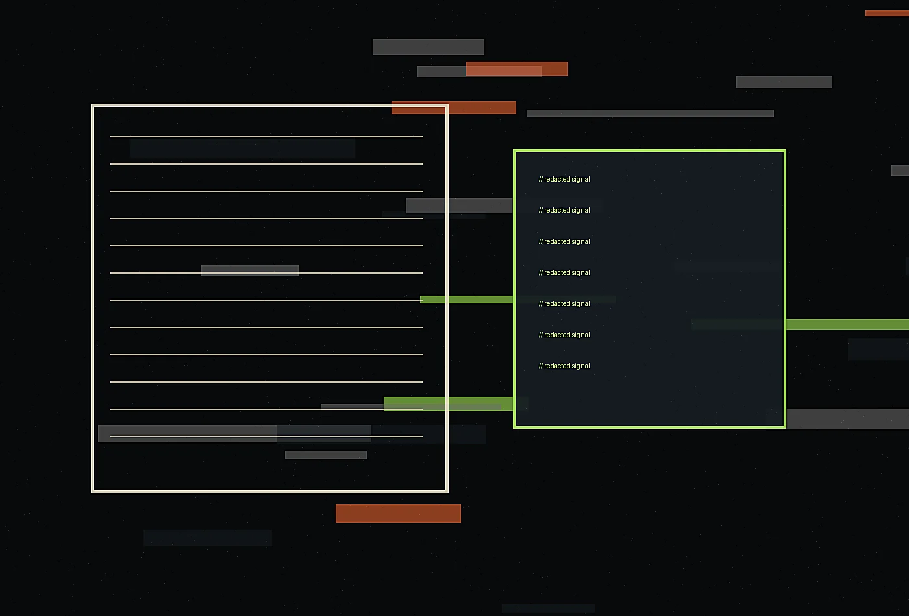

Contact details
404 Printer Alley, New York, NY 10013+1 (646) 555-0198
desk@cipherquill.example
Noir editorial cyber-intelligence bureau
Share the challenge, place, team, or upcoming deadline. Cipher Quill replies with a clear next step, not a canned pitch.
Request a briefing
Tell us what is changing, who is involved, and what deadline or decision is creating pressure. A useful first note does not need polish. It needs context. We will reply with the right format for a conversation, diagnostic, or referral.
Within two business days, a senior lead reviews the note and suggests a focused next step. If the project is not a fit, we will say so directly and recommend another route when possible.

Helpful materials include photographs, menus, route maps, audience notes, board deadlines, existing documents, or a simple list of what feels stuck. Send only what is safe and appropriate to share.
Please avoid sending sensitive incident details, credentials, personal data, or regulated information through the public form. A useful first message can be general: the audience, timeline, kind of risk communication involved, and whether counsel or communications leadership is already participating. We will recommend a safer workflow if the topic requires it.
Cipher Quill can work through executive sponsors, security leadership, communications teams, or counsel-directed workflows. The first exchange should identify the audience, urgency, document type, and sensitivity level without exposing secrets. If the matter involves an active incident or privileged material, we will move the conversation to a safer process before requesting detail.
For non-urgent work, we often begin by reviewing one existing artifact and one upcoming decision. That small sample reveals vocabulary gaps, evidence issues, audience confusion, and governance pressure. From there, we can recommend a focused edit, a repeatable briefing format, or a broader editorial operating system.
We can also sign appropriate confidentiality paperwork before reviewing internal material, and we will decline any channel that asks teams to share secrets in an unsafe way.